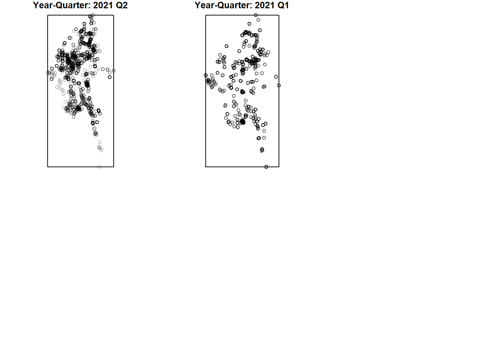

pacman::p_load(sf, raster, spatstat, sparr, tmap, tidyverse)Take-home Exercise 1
Harnessing Geospatial Analytics to Uncover Armed Conflict Patterns in Myanmar
2. Let’s Set Up!
2.1 Importing Libraries into R
To carry out this exercise, I will be using the following R packages:
- sf: a relatively new R package specially designed to import, manage and process vector-based geospatial data in R.
- spatstat: has a wide range of useful functions for point pattern analysis. In this take-home exercise, it will be used to perform 1st- and 2nd-order spatial point patterns analysis and derive kernel density estimation (KDE) layer.
- raster: reads, writes, manipulates, analyses and model of gridded spatial data (i.e. raster). In this take-home exercise, it will be used to convert image output generate by spatstat into raster format.
- maptools: provides a set of tools for manipulating geographic data. We mainly use it to convert Spatial objects into ppp format of spatstat.
- tmap: provides functions for plotting cartographic quality static point patterns maps or interactive maps by using leaflet API.
Now, let’s install and load these packages in RStudio.
2.2 Importing Data Sets into R
Next, I will import the downloaded armed conflict data. For aspatial datasets like this, we will import into Rstudio using read_csv() function of the readr package.
# Import armed conflict data
conflict_data <- read_csv("data/aspatial/2021-01-01-2024-06-30-Myanmar.csv")Rows: 87746 Columns: 28
── Column specification ────────────────────────────────────────────────────────
Delimiter: ","
chr (18): event_id_cnty, event_date, disorder_type, event_type, sub_event_ty...
dbl (10): year, time_precision, inter1, interaction, iso, latitude, longitud...
ℹ Use `spec()` to retrieve the full column specification for this data.
ℹ Specify the column types or set `show_col_types = FALSE` to quiet this message.
Observations
The 2021-01-01-2024-06-30-Myanmar.csv dataset contains 87746 rows and 28 columns which indicates the presence of 87746 unique armed conflict events in Myanmar.
After importing the dataset, we can inspect the dataset using the glimpse() function.
# Inspect the conflict data
glimpse(conflict_data)Rows: 87,746
Columns: 28
$ event_id_cnty <chr> "MMR64313", "MMR64313", "MMR64320", "MMR64320", "MM…
$ event_date <chr> "30 June 2024", "30 June 2024", "30 June 2024", "30…
$ year <dbl> 2024, 2024, 2024, 2024, 2024, 2024, 2024, 2024, 202…
$ time_precision <dbl> 1, 1, 1, 1, 1, 1, 1, 1, 1, 1, 1, 1, 1, 1, 1, 1, 1, …
$ disorder_type <chr> "Political violence", "Political violence", "Politi…
$ event_type <chr> "Battles", "Battles", "Battles", "Battles", "Battle…
$ sub_event_type <chr> "Armed clash", "Armed clash", "Armed clash", "Armed…
$ actor1 <chr> "People's Defense Force - Mandalay", "Military Forc…
$ assoc_actor_1 <chr> "MDA - AGF: Madaya - The Authentic Genes Force; SST…
$ inter1 <dbl> 3, 1, 3, 1, 3, 1, 1, 3, 1, 1, 1, 2, 2, 1, 1, 2, 1, …
$ interaction <dbl> 13, 13, 13, 13, 13, 13, 10, 13, 13, 10, 12, 12, 12,…
$ civilian_targeting <chr> NA, NA, NA, NA, NA, NA, NA, NA, NA, NA, NA, NA, NA,…
$ iso <dbl> 104, 104, 104, 104, 104, 104, 104, 104, 104, 104, 1…
$ region <chr> "Southeast Asia", "Southeast Asia", "Southeast Asia…
$ country <chr> "Myanmar", "Myanmar", "Myanmar", "Myanmar", "Myanma…
$ admin1 <chr> "Mandalay", "Mandalay", "Mandalay", "Mandalay", "Ma…
$ admin2 <chr> "Mandalay", "Mandalay", "Pyinoolwin", "Pyinoolwin",…
$ admin3 <chr> "Patheingyi", "Patheingyi", "Singu", "Singu", "Thab…
$ location <chr> "Aung Tha Pyay", "Aung Tha Pyay", "Pin Lel Gyi", "P…
$ latitude <dbl> 22.1504, 22.1504, 22.5752, 22.5752, 22.8800, 22.880…
$ longitude <dbl> 96.2364, 96.2364, 96.0661, 96.0661, 95.9700, 95.970…
$ geo_precision <dbl> 2, 2, 1, 1, 2, 2, 2, 2, 2, 2, 1, 1, 1, 1, 2, 2, 1, …
$ source <chr> "Democratic Voice of Burma; Irrawaddy", "Democratic…
$ source_scale <chr> "National", "National", "National", "National", "Na…
$ notes <chr> "On 30 June 2024, near Aung Tha Pyay village (Pathe…
$ fatalities <dbl> 0, 0, 0, 0, 0, 0, 0, 0, 0, 0, 0, 0, 2, 2, 0, 0, 0, …
$ tags <chr> NA, NA, NA, NA, NA, NA, NA, NA, NA, NA, NA, NA, NA,…
$ timestamp <dbl> 1720552468, 1720552468, 1720552468, 1720552468, 172…
Observations
The event_date field shows that it uses a character datatype instead of date - we will fix this later. Also, we can observe that thelongitude and langitude fields appear to be adopting the WGS84 geographic coordinate system since they are in the -180/180 and -90/90 range respectively.
I will also import the administrative boundary data into a simple features tibble data.frame using st_read() of the sf package. This function reads the shapefile data and returns an sf object that can be used for further analysis.
# Import boundary data
boundary_sf <- st_read(dsn = "data/geospatial",layer = "mmr_polbnda_adm2_250k_mimu") %>% st_transform(crs = 32647)Reading layer `mmr_polbnda_adm2_250k_mimu' from data source
`C:\SamanthaxFoo\IS415-GAA\Take-home_Ex\Take-home_Ex1\data\geospatial'
using driver `ESRI Shapefile'
Simple feature collection with 80 features and 7 fields
Geometry type: MULTIPOLYGON
Dimension: XY
Bounding box: xmin: 92.1721 ymin: 9.696844 xmax: 101.17 ymax: 28.54554
Geodetic CRS: WGS 84
Observations
In the code above, the %>% operator is used to pass the output of st_read() directly to the st_transform() function. Since the dataset represents the Myanmar boundary, we need to assign the appropriate coordinate reference system, which is UTM zone 47N (EPSG:32647), east of Myanmar. The st_transform() function then converts the CRS of the sf object to EPSG:32647.
In the code below, we can notice that the ESPG code has been updated to 32647.
# Check for changes
st_crs(boundary_sf)Coordinate Reference System:
User input: EPSG:32647
wkt:
PROJCRS["WGS 84 / UTM zone 47N",
BASEGEOGCRS["WGS 84",
ENSEMBLE["World Geodetic System 1984 ensemble",
MEMBER["World Geodetic System 1984 (Transit)"],
MEMBER["World Geodetic System 1984 (G730)"],
MEMBER["World Geodetic System 1984 (G873)"],
MEMBER["World Geodetic System 1984 (G1150)"],
MEMBER["World Geodetic System 1984 (G1674)"],
MEMBER["World Geodetic System 1984 (G1762)"],
MEMBER["World Geodetic System 1984 (G2139)"],
ELLIPSOID["WGS 84",6378137,298.257223563,
LENGTHUNIT["metre",1]],
ENSEMBLEACCURACY[2.0]],
PRIMEM["Greenwich",0,
ANGLEUNIT["degree",0.0174532925199433]],
ID["EPSG",4326]],
CONVERSION["UTM zone 47N",
METHOD["Transverse Mercator",
ID["EPSG",9807]],
PARAMETER["Latitude of natural origin",0,
ANGLEUNIT["degree",0.0174532925199433],
ID["EPSG",8801]],
PARAMETER["Longitude of natural origin",99,
ANGLEUNIT["degree",0.0174532925199433],
ID["EPSG",8802]],
PARAMETER["Scale factor at natural origin",0.9996,
SCALEUNIT["unity",1],
ID["EPSG",8805]],
PARAMETER["False easting",500000,
LENGTHUNIT["metre",1],
ID["EPSG",8806]],
PARAMETER["False northing",0,
LENGTHUNIT["metre",1],
ID["EPSG",8807]]],
CS[Cartesian,2],
AXIS["(E)",east,
ORDER[1],
LENGTHUNIT["metre",1]],
AXIS["(N)",north,
ORDER[2],
LENGTHUNIT["metre",1]],
USAGE[
SCOPE["Navigation and medium accuracy spatial referencing."],
AREA["Between 96°E and 102°E, northern hemisphere between equator and 84°N, onshore and offshore. China. Indonesia. Laos. Malaysia - West Malaysia. Mongolia. Myanmar (Burma). Russian Federation. Thailand."],
BBOX[0,96,84,102]],
ID["EPSG",32647]]Here, I will use the plot() function which plots the geometry of the sf object. The st_geometry() function is used to extract the geometry of the mpsz_sf object which includes the districts of Myanmar as shown below.
par(mar = c(0,0,0,0))
plot(st_geometry(boundary_sf))3. Data Wrangling
3.1 Fixing Incorrect Datatypes
Recall that the earlier inspection of the conflict_data tibble data frame revealed that the datatype indicated for event date is wrongly labelled as a character instead of a date format.
As such, let’s convert the datatype to the correct ‘date’ format as shown below.
# Convert the datatype for event_date
conflict_data$event_date <- as.Date(conflict_data$event_date, format = "%d %B %Y")
# Check for changes
head(conflict_data)# A tibble: 6 × 28
event_id_cnty event_date year time_precision disorder_type event_type
<chr> <date> <dbl> <dbl> <chr> <chr>
1 MMR64313 2024-06-30 2024 1 Political violence Battles
2 MMR64313 2024-06-30 2024 1 Political violence Battles
3 MMR64320 2024-06-30 2024 1 Political violence Battles
4 MMR64320 2024-06-30 2024 1 Political violence Battles
5 MMR64321 2024-06-30 2024 1 Political violence Battles
6 MMR64321 2024-06-30 2024 1 Political violence Battles
# ℹ 22 more variables: sub_event_type <chr>, actor1 <chr>, assoc_actor_1 <chr>,
# inter1 <dbl>, interaction <dbl>, civilian_targeting <chr>, iso <dbl>,
# region <chr>, country <chr>, admin1 <chr>, admin2 <chr>, admin3 <chr>,
# location <chr>, latitude <dbl>, longitude <dbl>, geo_precision <dbl>,
# source <chr>, source_scale <chr>, notes <chr>, fatalities <dbl>,
# tags <chr>, timestamp <dbl>3.2 Adding new year_quarter column
We will want to create a new column to indicate the specific year and quarter for each conflict event since the spatial analysis will be done later in a quarterly manner.
Extract year and quarter
conflict_data$year_quarter <- paste0(
year(conflict_data$event_date),
" Q",
quarter(conflict_data$event_date)
)
# View the new data column
unique(conflict_data$year_quarter) [1] "2024 Q2" "2024 Q1" "2023 Q4" "2023 Q3" "2023 Q2" "2023 Q1" "2022 Q4"
[8] "2022 Q3" "2022 Q2" "2022 Q1" "2021 Q4" "2021 Q3" "2021 Q2" "2021 Q1"3.3 Fixing Duplicated Event ID in conflict_data Dataframe
As shown, there are presence of duplicates in our dataframe returned by the duplicated() function.
# Check for duplicates
any(duplicated(conflict_data))[1] TRUEBased on the duplicated event ID: MMR64313 for instance. We can observe the two records are of the same political violence event happening between two actors on 30/6/2024, between the People’s Defense Force and Military Forces of Myanmar. Upon further research, these two actors are opposing political parties of Myanmar’s ongoing conflict.
# Inspect an instance of the duplciated event IDs
head(conflict_data,2)# A tibble: 2 × 29
event_id_cnty event_date year time_precision disorder_type event_type
<chr> <date> <dbl> <dbl> <chr> <chr>
1 MMR64313 2024-06-30 2024 1 Political violence Battles
2 MMR64313 2024-06-30 2024 1 Political violence Battles
# ℹ 23 more variables: sub_event_type <chr>, actor1 <chr>, assoc_actor_1 <chr>,
# inter1 <dbl>, interaction <dbl>, civilian_targeting <chr>, iso <dbl>,
# region <chr>, country <chr>, admin1 <chr>, admin2 <chr>, admin3 <chr>,
# location <chr>, latitude <dbl>, longitude <dbl>, geo_precision <dbl>,
# source <chr>, source_scale <chr>, notes <chr>, fatalities <dbl>,
# tags <chr>, timestamp <dbl>, year_quarter <chr>
Reflection
Should duplicated data be removed in this analysis?
A single event (e.g. MMR64313) can have duplicated rows with different actor1 values, typically due to counterattacks from opposing sides, leading to different data entries into the conflict_data dataset.
Hence, I will remove duplicated events found in the conflict_data dataframe as long as the rows have the same event ID indicated.
Here, I did another check to ensure there is not more than 2 possible repeated event IDs in the first 20 rows of conflict_data.
Check duplicated events for first 20 rows
duplicate_counts_first_20 <- conflict_data %>%
slice(1:20) %>%
group_by(event_id_cnty) %>%
summarize(count = n()) %>%
filter(count > 1)
# View the result
print(duplicate_counts_first_20)# A tibble: 9 × 2
event_id_cnty count
<chr> <int>
1 MMR64313 2
2 MMR64320 2
3 MMR64321 2
4 MMR64323 2
5 MMR64325 2
6 MMR64326 2
7 MMR64328 2
8 MMR64330 2
9 MMR64331 2With that checked, I’ll remove the duplicated rows with a repeated Event ID.
Remove duplicated rows
# Retrieve data of duplicated rows
merged_duplicates <- conflict_data %>%
filter(duplicated(event_id_cnty) | duplicated(event_id_cnty, fromLast = TRUE)) %>%
arrange(event_id_cnty) %>%
group_by(event_id_cnty) %>%
summarize(
actor2 = last(actor1),
assoc_actor_2 = last(assoc_actor_1)
)
conflict_data_no_duplicates <- conflict_data %>%
filter(!duplicated(event_id_cnty))
# Update conflict_data dataframe with new columns
conflict_data <- conflict_data_no_duplicates %>%
left_join(merged_duplicates, by = "event_id_cnty")
# View dataframe
print(head(conflict_data))# A tibble: 6 × 31
event_id_cnty event_date year time_precision disorder_type event_type
<chr> <date> <dbl> <dbl> <chr> <chr>
1 MMR64313 2024-06-30 2024 1 Political violence Battles
2 MMR64320 2024-06-30 2024 1 Political violence Battles
3 MMR64321 2024-06-30 2024 1 Political violence Battles
4 MMR64322 2024-06-30 2024 1 Strategic developmen… Strategic…
5 MMR64323 2024-06-30 2024 1 Political violence Battles
6 MMR64324 2024-06-30 2024 1 Strategic developmen… Strategic…
# ℹ 25 more variables: sub_event_type <chr>, actor1 <chr>, assoc_actor_1 <chr>,
# inter1 <dbl>, interaction <dbl>, civilian_targeting <chr>, iso <dbl>,
# region <chr>, country <chr>, admin1 <chr>, admin2 <chr>, admin3 <chr>,
# location <chr>, latitude <dbl>, longitude <dbl>, geo_precision <dbl>,
# source <chr>, source_scale <chr>, notes <chr>, fatalities <dbl>,
# tags <chr>, timestamp <dbl>, year_quarter <chr>, actor2 <chr>,
# assoc_actor_2 <chr>We can observe that there are no longer any duplicated event IDs in our conflict_data data frame.
any(duplicated(conflict_data))[1] FALSE3.4 Converting Aspatial Data to Simple Feature Format
For the purpose of this exercise, we will want to integrate and analyse aspatial data in a geographic context. I’ll do a check if conflict_data needs to be converted to a sf data frame - if it outputs anything else but sf, then it’s not a simple feature data frame!
class(conflict_data)[1] "spec_tbl_df" "tbl_df" "tbl" "data.frame"
Observations
We can see that conflict_data is not a sf data frame. Since a non-simple feature data frame does not have a “geometry” column, we’ll need to convert conflict_data into a simple feature data frame
We can convert conflict_data into a simple feature data frame by using st_as_sf() from the sf package. Addiitionally, we will also need to transform coordinate system from geographic (ESPG: 4326) to projected (ESPG: 32647) using st_transform().
# Convert to simple feature format
conflict_data_sf <- st_as_sf(conflict_data, coords = c("longitude", "latitude"), crs=4326) %>% st_transform(crs = 32647)
# Inspect the changes
glimpse(conflict_data_sf)Rows: 51,553
Columns: 30
$ event_id_cnty <chr> "MMR64313", "MMR64320", "MMR64321", "MMR64322", "MM…
$ event_date <date> 2024-06-30, 2024-06-30, 2024-06-30, 2024-06-30, 20…
$ year <dbl> 2024, 2024, 2024, 2024, 2024, 2024, 2024, 2024, 202…
$ time_precision <dbl> 1, 1, 1, 1, 1, 1, 1, 1, 1, 1, 1, 1, 1, 1, 1, 1, 1, …
$ disorder_type <chr> "Political violence", "Political violence", "Politi…
$ event_type <chr> "Battles", "Battles", "Battles", "Strategic develop…
$ sub_event_type <chr> "Armed clash", "Armed clash", "Armed clash", "Chang…
$ actor1 <chr> "People's Defense Force - Mandalay", "People's Defe…
$ assoc_actor_1 <chr> "MDA - AGF: Madaya - The Authentic Genes Force; SST…
$ inter1 <dbl> 3, 3, 3, 1, 3, 1, 1, 2, 1, 1, 1, 1, 3, 3, 3, 7, 1, …
$ interaction <dbl> 13, 13, 13, 10, 13, 10, 12, 12, 12, 12, 12, 13, 13,…
$ civilian_targeting <chr> NA, NA, NA, NA, NA, NA, NA, NA, NA, NA, NA, NA, NA,…
$ iso <dbl> 104, 104, 104, 104, 104, 104, 104, 104, 104, 104, 1…
$ region <chr> "Southeast Asia", "Southeast Asia", "Southeast Asia…
$ country <chr> "Myanmar", "Myanmar", "Myanmar", "Myanmar", "Myanma…
$ admin1 <chr> "Mandalay", "Mandalay", "Mandalay", "Sagaing", "Sag…
$ admin2 <chr> "Mandalay", "Pyinoolwin", "Pyinoolwin", "Shwebo", "…
$ admin3 <chr> "Patheingyi", "Singu", "Thabeikkyin", "Khin-U", "My…
$ location <chr> "Aung Tha Pyay", "Pin Lel Gyi", "Thabeikkyin", "Khi…
$ geo_precision <dbl> 2, 1, 2, 2, 2, 2, 1, 1, 2, 1, 1, 2, 1, 1, 2, 2, 1, …
$ source <chr> "Democratic Voice of Burma; Irrawaddy", "Irrawaddy"…
$ source_scale <chr> "National", "National", "National", "Subnational-Na…
$ notes <chr> "On 30 June 2024, near Aung Tha Pyay village (Pathe…
$ fatalities <dbl> 0, 0, 0, 0, 0, 0, 0, 2, 0, 0, 0, 0, 0, 0, 0, 0, 0, …
$ tags <chr> NA, NA, NA, NA, NA, NA, NA, NA, NA, NA, NA, NA, NA,…
$ timestamp <dbl> 1720552468, 1720552468, 1720552468, 1720552468, 172…
$ year_quarter <chr> "2024 Q2", "2024 Q2", "2024 Q2", "2024 Q2", "2024 Q…
$ actor2 <chr> "Military Forces of Myanmar (2021-)", "Military For…
$ assoc_actor_2 <chr> NA, NA, NA, NA, NA, NA, NA, NA, NA, NA, NA, "Uniden…
$ geometry <POINT [m]> POINT (214961 2452068), POINT (198303.2 24994…
Observations
Notice that a new column called geometry has been added into the data frame. On the other hand, the longitude and latitude columns have been removed from the data frame.
We can further inspect the newly created ‘geometry’ column of conflict_data_sf
# Retrieve geometry column
st_geometry(conflict_data_sf)Geometry set for 51553 features
Geometry type: POINT
Dimension: XY
Bounding box: xmin: -208804.4 ymin: 1103500 xmax: 640934.5 ymax: 3042960
Projected CRS: WGS 84 / UTM zone 47N
First 5 geometries:POINT (214961 2452068)POINT (198303.2 2499463)POINT (189105.4 2533434)POINT (160913.9 2522331)POINT (146213 2428487)
Observations
It consists of 51,533 features consisting of point geometric features where the underlying datum is in WGS 84 format.
To ensure that the coordinate system is correctly updated, we can use the st_crs() function where we observe that the ESPG code is correctly indicated as 32647.
# Check CRS format
st_crs(conflict_data_sf)Coordinate Reference System:
User input: EPSG:32647
wkt:
PROJCRS["WGS 84 / UTM zone 47N",
BASEGEOGCRS["WGS 84",
ENSEMBLE["World Geodetic System 1984 ensemble",
MEMBER["World Geodetic System 1984 (Transit)"],
MEMBER["World Geodetic System 1984 (G730)"],
MEMBER["World Geodetic System 1984 (G873)"],
MEMBER["World Geodetic System 1984 (G1150)"],
MEMBER["World Geodetic System 1984 (G1674)"],
MEMBER["World Geodetic System 1984 (G1762)"],
MEMBER["World Geodetic System 1984 (G2139)"],
ELLIPSOID["WGS 84",6378137,298.257223563,
LENGTHUNIT["metre",1]],
ENSEMBLEACCURACY[2.0]],
PRIMEM["Greenwich",0,
ANGLEUNIT["degree",0.0174532925199433]],
ID["EPSG",4326]],
CONVERSION["UTM zone 47N",
METHOD["Transverse Mercator",
ID["EPSG",9807]],
PARAMETER["Latitude of natural origin",0,
ANGLEUNIT["degree",0.0174532925199433],
ID["EPSG",8801]],
PARAMETER["Longitude of natural origin",99,
ANGLEUNIT["degree",0.0174532925199433],
ID["EPSG",8802]],
PARAMETER["Scale factor at natural origin",0.9996,
SCALEUNIT["unity",1],
ID["EPSG",8805]],
PARAMETER["False easting",500000,
LENGTHUNIT["metre",1],
ID["EPSG",8806]],
PARAMETER["False northing",0,
LENGTHUNIT["metre",1],
ID["EPSG",8807]]],
CS[Cartesian,2],
AXIS["(E)",east,
ORDER[1],
LENGTHUNIT["metre",1]],
AXIS["(N)",north,
ORDER[2],
LENGTHUNIT["metre",1]],
USAGE[
SCOPE["Navigation and medium accuracy spatial referencing."],
AREA["Between 96°E and 102°E, northern hemisphere between equator and 84°N, onshore and offshore. China. Indonesia. Laos. Malaysia - West Malaysia. Mongolia. Myanmar (Burma). Russian Federation. Thailand."],
BBOX[0,96,84,102]],
ID["EPSG",32647]]3.5 Reduce Data File Size
In this section, I will reduce the current Myanmar armed conflict dataset as the time taken for computing the kernel density estimates can take up to 30 minutes long which is not computationally efficient.
1) Remove ‘Protests’ and ‘Riots’ Event Types
I will remove rows in the conflicts_data_sf dataset that don’t focus on the four main event types (Battles, Explosion/Remote violence, Strategic developments, and Violence against civilians), as mentioned in the exercise brief.
conflict_data_sf <- conflict_data_sf %>%
filter(!(event_type %in% c("Protests", "Riots")))
unique(conflict_data_sf$event_type)[1] "Battles" "Strategic developments"
[3] "Violence against civilians" "Explosions/Remote violence"2) Remove unused columns in boundary_sf
As seen, there are 8 columns in the simple feature data frame of boundary_sf.
# Inspect first rows of data in boundary_sf
head(boundary_sf)Simple feature collection with 6 features and 7 fields
Geometry type: MULTIPOLYGON
Dimension: XY
Bounding box: xmin: -14915.04 ymin: 1736124 xmax: 187961.7 ymax: 2051144
Projected CRS: WGS 84 / UTM zone 47N
OBJECTID ST ST_PCODE DT DT_PCODE DT_MMR PCode_V
1 1 Ayeyarwady MMR017 Hinthada MMR017D002 ဟင်္သာတခရိုင် 9.4
2 2 Ayeyarwady MMR017 Labutta MMR017D004 လပွတ္တာခရိုင် 9.4
3 3 Ayeyarwady MMR017 Maubin MMR017D005 မအူပင်ခရိုင် 9.4
4 4 Ayeyarwady MMR017 Myaungmya MMR017D003 မြောင်းမြခရိုင် 9.4
5 5 Ayeyarwady MMR017 Pathein MMR017D001 ပုသိမ်ခရိုင် 9.4
6 6 Ayeyarwady MMR017 Pyapon MMR017D006 ဖျာပုံခရိုင် 9.4
geometry
1 MULTIPOLYGON (((90859.89 20...
2 MULTIPOLYGON (((75991.51 17...
3 MULTIPOLYGON (((115559 1928...
4 MULTIPOLYGON (((39919.39 18...
5 MULTIPOLYGON (((-6302.348 1...
6 MULTIPOLYGON (((93411.72 17...I will remove ’DT_MMR” column as we already have the District Name in English in DT and won’t require the district names in Myanmar Language. Next, we will remove the coded versions of ST (state/region) and DT (district) columns, namely ST_PCODE and DT_PCODE. Additionally, we won’t need the PCode_V column since we will be dropping the PCODE column too.
boundary_sf <- boundary_sf %>% dplyr::select('OBJECTID', 'ST', 'DT','geometry')
summary(boundary_sf) OBJECTID ST DT geometry
Min. : 1.00 Length:80 Length:80 MULTIPOLYGON :80
1st Qu.:20.75 Class :character Class :character epsg:32647 : 0
Median :40.50 Mode :character Mode :character +proj=utm ...: 0
Mean :40.50
3rd Qu.:60.25
Max. :80.00 3) Remove unused columns in conflict_data
I will also remove unnecessary columns of the conflict_data data frame that won’t be used in our spatial analysis later.
Remove unnecessary columns
conflict_data_sf <- conflict_data_sf %>%
select(event_id_cnty, event_date, year_quarter, disorder_type, event_type, location, geometry, fatalities)
summary(conflict_data_sf) event_id_cnty event_date year_quarter disorder_type
Length:42608 Min. :2021-01-01 Length:42608 Length:42608
Class :character 1st Qu.:2022-01-10 Class :character Class :character
Mode :character Median :2022-10-13 Mode :character Mode :character
Mean :2022-10-29
3rd Qu.:2023-08-29
Max. :2024-06-30
event_type location geometry fatalities
Length:42608 Length:42608 POINT :42608 Min. : 0.00
Class :character Class :character epsg:32647 : 0 1st Qu.: 0.00
Mode :character Mode :character +proj=utm ...: 0 Median : 0.00
Mean : 1.27
3rd Qu.: 1.00
Max. :201.00 Let’s append conflict_data_sf with the columns of boundary_sf to assist our analysis later.
# Link conflict event to its district region
conflict_data_sf <- st_join(conflict_data_sf, boundary_sf, join = st_intersects)3.6 Converting Simple Features Data Frame into ppp Object
It is important that we convert conflict_data_sf (a simple feature data frame) into a planer point pattern (ppp) object format, since the spatstat package that we’ll be using for the Spatial Point Pattern Analysis later is specifically designed for working with ppp-formated data. Additionally, I will begin with categorising the ppp objects into their unique year_quarter category.
Create ppp objects based on year_quarter category
# Create an empty list to store the ppp objects
ppp_list <- list()
# Loop through each unique year_quarter category
for (yq in unique(conflict_data_sf$year_quarter)) {
# Subset the data for the current year_quarter
subset_data_sf <- conflict_data_sf %>% filter(year_quarter == yq)
# Convert the subset to a ppp object
subset_ppp <- as.ppp(subset_data_sf$geometry)
# Add the ppp object to the list
ppp_list[[yq]] <- subset_ppp
}
# Check list
ppp_list$`2024 Q2`
Planar point pattern: 2788 points
window: rectangle = [-208804.4, 597543.7] x [1103500.1, 3026504.9] units
$`2024 Q1`
Planar point pattern: 3186 points
window: rectangle = [-207135, 591875.9] x [1245380, 3026504.9] units
$`2023 Q4`
Planar point pattern: 3627 points
window: rectangle = [-206931.7, 604775.1] x [1103500.1, 3020772.2] units
$`2023 Q3`
Planar point pattern: 3010 points
window: rectangle = [-197883.4, 518300.4] x [1103500.1, 3027041.8] units
$`2023 Q2`
Planar point pattern: 2745 points
window: rectangle = [-191261.5, 518300.4] x [1103500.1, 3006372.9] units
$`2023 Q1`
Planar point pattern: 3101 points
window: rectangle = [-199243.8, 591875.9] x [1103500.1, 3026504.9] units
$`2022 Q4`
Planar point pattern: 3296 points
window: rectangle = [-206531.5, 518300.4] x [1103500.1, 2931517.1] units
$`2022 Q3`
Planar point pattern: 3486 points
window: rectangle = [-206196.6, 568361.5] x [1103500.1, 3026504.9] units
$`2022 Q2`
Planar point pattern: 3580 points
window: rectangle = [-206931.7, 640934.5] x [1103500.1, 3026504.9] units
$`2022 Q1`
Planar point pattern: 3563 points
window: rectangle = [-204784, 591875.9] x [1103500.1, 3026504.9] units
$`2021 Q4`
Planar point pattern: 3844 points
window: rectangle = [-200024.3, 591875.9] x [1103500.1, 3042960.3] units
$`2021 Q3`
Planar point pattern: 2754 points
window: rectangle = [-193181.1, 591875.9] x [1103500.1, 3042960.3] units
$`2021 Q2`
Planar point pattern: 2916 points
window: rectangle = [-191409.1, 640934.5] x [1132472.1, 3042960.3] units
$`2021 Q1`
Planar point pattern: 712 points
window: rectangle = [-203795.3, 591875.9] x [1375186.1, 3026504.9] unitsWe can visualise the spread of conflict events across each quarter from January 2021 to June 2024 using the plot() function as shown below.
Visualise the spread of conflicts by year_quarter
# Ensure 'year_quarter' is a factor
conflict_data_sf$year_quarter <- as.factor(conflict_data_sf$year_quarter)
# Loop through each unique year_quarter and create separate plots
year_quarters <- unique(conflict_data_sf$year_quarter)
# Set up a grid layout for multiple plots (adjust 'mfrow' as needed)
par(mfrow = c(2,3))
par(mar = c(0,0,1,0))
# Loop through each year_quarter and plot
for (yq in year_quarters) {
subset_data_sf <- conflict_data_sf[conflict_data_sf$year_quarter == yq, ]
conflict_data_ppp <- as.ppp(subset_data_sf$geometry)
# Plot each subset ppp object
plot(conflict_data_ppp, main = paste("Year-Quarter:", yq))
}
Observations
It is noticeable that there conflict events have occured more frequently since 2021 as points plotted on the graph have gotten darker across 2021 to 2024. We can also observe the possibility of duplicated events occurring from the darker spots in the plot, in which it appears more intense in Myanmar’s central and west regions.
3.7 Creating owin object
When analysing spatial point patterns, it is a good practice to confine the analysis with a geographical area, that is Myanmar’s boundary in this case. In spatstat, an object called owin is specially designed to represent this polygonal region.
The code chunk below is used to convert the boundary_data_sf simple feature data frame into an owin object of spatstat.
# Convert to owin object
myanmar_owin <- as.owin(boundary_sf)
# Visualise the owin object
plot(myanmar_owin)
Observations
From my observations, the as.owin() function converts the boundary_data_sf spatial boundary into a window object that represents the outer boundary of the spatial region and does not handle internal structures or districts we previously saw from the plot of boundary_data_sf.
We can also take a quick look at the owin object properties as shown. I will be converting it to a data frame for the purposes of getting a quick glimpse of the object.
# Summary info of owin object
owin_df <- as.data.frame(myanmar_owin)
print(head(owin_df)) x y id sign
1 56519.39 2741919 1 -1
2 56917.28 2741947 1 -1
3 57000.15 2741973 1 -1
4 57068.51 2741994 1 -1
5 57221.44 2742142 1 -1
6 57068.51 2741994 1 -13.8 Combining ppp Object and owin Object
In this last step of geospatial data wrangling, I will mask all ppp object with the owin object I created earlier to put in place all conflict events within the boundary of Myanmar. Doing so can also optimise the memory usage for large datasets.
The ppp object outputted from combining both the point and polygon feature results in the boundary of Myanmar outlining the plot of conflict events as shown.
# Set up plotting layout
n <- length(masked_ppp_list)
# Plot each masked ppp object
par(mfrow = c(2,3), mar = c(0,0,1,0)) # Adjust margins as needed
for (quarter in names(masked_ppp_list)) {
plot(masked_ppp_list[[quarter]], main = paste("Year Quarter:", quarter))
}masked_ppp_list_km = list()
for (quarter in names(masked_ppp_list)) {
ppp_obj <- masked_ppp_list[[quarter]]
ppp_obj_km <- rescale(ppp_obj, 1000, "km")
masked_ppp_list_km[[quarter]] <- ppp_obj_km
}7. Spatio-Temporal KDE
Set up DayofYear variable per quarter
Q2_2024 <- conflict_data_sf %>%
filter(year_quarter == "2024 Q2") %>%
mutate(DayofYear = yday(event_date))
Q1_2024 <- conflict_data_sf %>%
filter(year_quarter == "2024 Q1") %>%
mutate(DayofYear = yday(event_date))
Q4_2023 <- conflict_data_sf %>%
filter(year_quarter == "2023 Q4") %>%
mutate(DayofYear = yday(event_date))
Q3_2023 <- conflict_data_sf %>%
filter(year_quarter == "2023 Q3") %>%
mutate(DayofYear = yday(event_date))
Q2_2023 <- conflict_data_sf %>%
filter(year_quarter == "2023 Q2") %>%
mutate(DayofYear = yday(event_date))
Q1_2023 <- conflict_data_sf %>%
filter(year_quarter == "2023 Q1") %>%
mutate(DayofYear = yday(event_date))
Q4_2022 <- conflict_data_sf %>%
filter(year_quarter == "2022 Q4") %>%
mutate(DayofYear = yday(event_date))
Q3_2022 <- conflict_data_sf %>%
filter(year_quarter == "2022 Q3") %>%
mutate(DayofYear = yday(event_date))
Q2_2022 <- conflict_data_sf %>%
filter(year_quarter == "2022 Q2") %>%
mutate(DayofYear = yday(event_date))
Q1_2022 <- conflict_data_sf %>%
filter(year_quarter == "2022 Q1") %>%
mutate(DayofYear = yday(event_date))
Q4_2021 <- conflict_data_sf %>%
filter(year_quarter == "2021 Q4") %>%
mutate(DayofYear = yday(event_date))
Q3_2021 <- conflict_data_sf %>%
filter(year_quarter == "2021 Q3") %>%
mutate(DayofYear = yday(event_date))
Q2_2021 <- conflict_data_sf %>%
filter(year_quarter == "2021 Q2") %>%
mutate(DayofYear = yday(event_date))
Q1_2021 <- conflict_data_sf %>%
filter(year_quarter == "2021 Q1") %>%
mutate(DayofYear = yday(event_date))7.1 Creating ppp object
In the code chunk below, DayofYear from the fire_sf data frame is selected and is included in the output ppp object.
Create ppp object per quarter
Q2_2024_ppp <- Q2_2024 %>%
select(DayofYear) %>%
as.ppp()
Q1_2024_ppp <- Q1_2024 %>%
select(DayofYear) %>%
as.ppp()
Q4_2023_ppp <- Q4_2023 %>%
select(DayofYear) %>%
as.ppp()
Q3_2023_ppp <- Q3_2023 %>%
select(DayofYear) %>%
as.ppp()
Q2_2023_ppp <- Q2_2023 %>%
select(DayofYear) %>%
as.ppp()
Q1_2023_ppp <- Q1_2023 %>%
select(DayofYear) %>%
as.ppp()
Q4_2022_ppp <- Q4_2022 %>%
select(DayofYear) %>%
as.ppp()
Q3_2022_ppp <- Q3_2022 %>%
select(DayofYear) %>%
as.ppp()
Q2_2022_ppp <- Q2_2022 %>%
select(DayofYear) %>%
as.ppp()
Q1_2022_ppp <- Q1_2022 %>%
select(DayofYear) %>%
as.ppp()
Q4_2021_ppp <- Q4_2021 %>%
select(DayofYear) %>%
as.ppp()
Q3_2021_ppp <- Q3_2021 %>%
select(DayofYear) %>%
as.ppp()
Q2_2021_ppp <- Q2_2021 %>%
select(DayofYear) %>%
as.ppp()
Q1_2021_ppp <- Q1_2021 %>%
select(DayofYear) %>%
as.ppp()7.2 Combining ppp with owin object
Next, code chunk below is used to combine the ppp object and the owin object.
Mask the ppp object with owin object
Q2_2024_owin <- Q2_2024_ppp[myanmar_owin]
Q1_2024_owin <- Q1_2024_ppp[myanmar_owin]
Q4_2023_owin <- Q4_2023_ppp[myanmar_owin]
Q3_2023_owin <- Q3_2023_ppp[myanmar_owin]
Q2_2023_owin <- Q2_2023_ppp[myanmar_owin]
Q1_2023_owin <- Q1_2023_ppp[myanmar_owin]
Q4_2022_owin <- Q4_2022_ppp[myanmar_owin]
Q3_2022_owin <- Q3_2022_ppp[myanmar_owin]
Q2_2022_owin <- Q2_2022_ppp[myanmar_owin]
Q1_2022_owin <- Q1_2022_ppp[myanmar_owin]
Q4_2021_owin <- Q4_2021_ppp[myanmar_owin]
Q3_2021_owin <- Q3_2021_ppp[myanmar_owin]
Q2_2021_owin <- Q2_2021_ppp[myanmar_owin]
Q1_2021_owin <- Q1_2021_ppp[myanmar_owin]Now, I will perform a spatio-temporal kernel density estimate on the owin object which gives us insights into where and when conflict event occurrences are concentrated within the specified observation window.
Perform spatial temporal KDE per quarter
Q2_2024_stkde <- spattemp.density(Q2_2024_owin)
Q1_2024_stkde <- spattemp.density(Q1_2024_owin)
Q4_2023_stkde <- spattemp.density(Q4_2023_owin)
Q3_2023_stkde <- spattemp.density(Q3_2023_owin)
Q2_2023_stkde <- spattemp.density(Q2_2023_owin)
Q1_2023_stkde <- spattemp.density(Q1_2023_owin)
Q4_2022_stkde <- spattemp.density(Q4_2022_owin)
Q3_2022_stkde <- spattemp.density(Q3_2022_owin)
Q2_2022_stkde <- spattemp.density(Q2_2022_owin)
Q1_2022_stkde <- spattemp.density(Q1_2022_owin)
Q4_2021_stkde <- spattemp.density(Q4_2021_owin)
Q3_2021_stkde <- spattemp.density(Q3_2021_owin)
Q2_2021_stkde <- spattemp.density(Q2_2021_owin)
Q1_2021_stkde <- spattemp.density(Q1_2021_owin)STKDE of 2024 Q2
# Load necessary libraries
library(spatstat)
library(magick)
library(viridis)
# Create a directory to store PNG frames
if (!dir.exists("2024_Q2_frames")) {
dir.create("2024_Q2_frames")
}
# Get the unique day values
days <- names(Q2_2024_stkde$z)
# Loop through each day and save the plot
for (day in days) {
kde_result <- Q2_2024_stkde$z[[day]]
# Create PNG filename
png_filename <- file.path("2024_Q2_frames", sprintf("frame_%s.png", day))
# Save the plot as PNG
png(filename = png_filename, width = 800, height = 800)
plot(kde_result, main = paste("2024 Q2 - Day", day), col = viridis::viridis(100))
dev.off()
}
# Read all PNG files from the frames directory
frames <- image_read(list.files("2024_Q2_frames", full.names = TRUE, pattern = "*.png"))
animation <- image_animate(image_join(frames), fps = 10)
output_path <- "2024_Q2_stkde.gif"
image_write(animation, path = output_path)STKDE of 2024 Q1
# Create a directory to store PNG frames
if (!dir.exists("2024_Q1_frames")) {
dir.create("2024_Q1_frames")
}
# Get the unique day values
days <- names(Q1_2024_stkde$z)
# Loop through each day and save the plot
for (day in days) {
kde_result <- Q1_2024_stkde$z[[day]]
# Create PNG filename
png_filename <- file.path("2024_Q1_frames", sprintf("frame_%s.png", day))
# Save the plot as PNG
png(filename = png_filename, width = 800, height = 800)
plot(kde_result, main = paste("2024 Q1 - Day", day), col = viridis::viridis(100))
dev.off()
}
# Read all PNG files from the frames directory
frames <- image_read(list.files("2024_Q1_frames", full.names = TRUE, pattern = "*.png"))
animation <- image_animate(image_join(frames), fps = 10)
output_path <- "2024_Q1_stkde.gif"
image_write(animation, path = output_path)STKDE of 2023 Q4
# Create a directory to store PNG frames
if (!dir.exists("2023_Q4_frames")) {
dir.create("2023_Q4_frames")
}
# Get the unique day values
days <- names(Q4_2023_stkde$z)
# Loop through each day and save the plot
for (day in days) {
kde_result <- Q4_2023_stkde$z[[day]]
# Create PNG filename
png_filename <- file.path("2023_Q4_frames", sprintf("frame_%s.png", day))
# Save the plot as PNG
png(filename = png_filename, width = 800, height = 800)
plot(kde_result, main = paste("2023 Q4 - Day", day), col = viridis::viridis(100))
dev.off()
}
# Read all PNG files from the frames directory
frames <- image_read(list.files("2023_Q4_frames", full.names = TRUE, pattern = "*.png"))
animation <- image_animate(image_join(frames), fps = 10)
output_path <- "2023_Q4_stkde.gif"
image_write(animation, path = output_path)STKDE of 2023 Q3
# Create a directory to store PNG frames
if (!dir.exists("2023_Q3_frames")) {
dir.create("2023_Q3_frames")
}
# Get the unique day values
days <- names(Q3_2023_stkde$z)
# Loop through each day and save the plot
for (day in days) {
kde_result <- Q3_2023_stkde$z[[day]]
# Create PNG filename
png_filename <- file.path("2023_Q3_frames", sprintf("frame_%s.png", day))
# Save the plot as PNG
png(filename = png_filename, width = 800, height = 800)
plot(kde_result, main = paste("2023 Q3 - Day", day), col = viridis::viridis(100))
dev.off()
}
# Read all PNG files from the frames directory
frames <- image_read(list.files("2023_Q3_frames", full.names = TRUE, pattern = "*.png"))
animation <- image_animate(image_join(frames), fps = 10)
output_path <- "2023_Q3_stkde.gif"
image_write(animation, path = output_path)STKDE of 2023 Q2
# Create a directory to store PNG frames
if (!dir.exists("2023_Q2_frames")) {
dir.create("2023_Q2_frames")
}
# Get the unique day values
days <- names(Q2_2023_stkde$z)
# Loop through each day and save the plot
for (day in days) {
kde_result <- Q2_2023_stkde$z[[day]]
# Create PNG filename
png_filename <- file.path("2023_Q2_frames", sprintf("frame_%s.png", day))
# Save the plot as PNG
png(filename = png_filename, width = 800, height = 800)
plot(kde_result, main = paste("2023 Q2 - Day", day), col = viridis::viridis(100))
dev.off()
}
# Read all PNG files from the frames directory
frames <- image_read(list.files("2023_Q2_frames", full.names = TRUE, pattern = "*.png"))
animation <- image_animate(image_join(frames), fps = 10)
output_path <- "2023_Q2_stkde.gif"
image_write(animation, path = output_path)STKDE of 2023 Q1
# Create a directory to store PNG frames
if (!dir.exists("2023_Q1_frames")) {
dir.create("2023_Q1_frames")
}
# Get the unique day values
days <- names(Q1_2023_stkde$z)
# Loop through each day and save the plot
for (day in days) {
kde_result <- Q1_2023_stkde$z[[day]]
# Create PNG filename
png_filename <- file.path("2023_Q1_frames", sprintf("frame_%s.png", day))
# Save the plot as PNG
png(filename = png_filename, width = 800, height = 800)
plot(kde_result, main = paste("2023 Q1 - Day", day), col = viridis::viridis(100))
dev.off()
}
# Read all PNG files from the frames directory
frames <- image_read(list.files("2023_Q1_frames", full.names = TRUE, pattern = "*.png"))
animation <- image_animate(image_join(frames), fps = 10)
output_path <- "2023_Q1_stkde.gif"
image_write(animation, path = output_path)STKDE of 2022 Q4
# Create a directory to store PNG frames
if (!dir.exists("2022_Q4_frames")) {
dir.create("2022_Q4_frames")
}
# Get the unique day values
days <- names(Q4_2022_stkde$z)
# Loop through each day and save the plot
for (day in days) {
kde_result <- Q4_2022_stkde$z[[day]]
# Create PNG filename
png_filename <- file.path("2022_Q4_frames", sprintf("frame_%s.png", day))
# Save the plot as PNG
png(filename = png_filename, width = 800, height = 800)
plot(kde_result, main = paste("2022 Q4 - Day", day), col = viridis::viridis(100))
dev.off()
}
# Read all PNG files from the frames directory
frames <- image_read(list.files("2022_Q4_frames", full.names = TRUE, pattern = "*.png"))
animation <- image_animate(image_join(frames), fps = 10)
output_path <- "2022_Q4_stkde.gif"
image_write(animation, path = output_path)STKDE of 2022 Q3
# Create a directory to store PNG frames
if (!dir.exists("2022_Q3_frames")) {
dir.create("2022_Q3_frames")
}
# Get the unique day values
days <- names(Q3_2022_stkde$z)
# Loop through each day and save the plot
for (day in days) {
kde_result <- Q3_2022_stkde$z[[day]]
# Create PNG filename
png_filename <- file.path("2022_Q3_frames", sprintf("frame_%s.png", day))
# Save the plot as PNG
png(filename = png_filename, width = 800, height = 800)
plot(kde_result, main = paste("2022 Q3 - Day", day), col = viridis::viridis(100))
dev.off()
}
# Read all PNG files from the frames directory
frames <- image_read(list.files("2022_Q3_frames", full.names = TRUE, pattern = "*.png"))
animation <- image_animate(image_join(frames), fps = 10)
output_path <- "2022_Q3_stkde.gif"
image_write(animation, path = output_path)STKDE of 2022 Q2
# Create a directory to store PNG frames
if (!dir.exists("2022_Q2_frames")) {
dir.create("2022_Q2_frames")
}
# Get the unique day values
days <- names(Q2_2022_stkde$z)
# Loop through each day and save the plot
for (day in days) {
kde_result <- Q2_2022_stkde$z[[day]]
# Create PNG filename
png_filename <- file.path("2022_Q2_frames", sprintf("frame_%s.png", day))
# Save the plot as PNG
png(filename = png_filename, width = 800, height = 800)
plot(kde_result, main = paste("2022 Q2 - Day", day), col = viridis::viridis(100))
dev.off()
}
# Read all PNG files from the frames directory
frames <- image_read(list.files("2022_Q2_frames", full.names = TRUE, pattern = "*.png"))
animation <- image_animate(image_join(frames), fps = 10)
output_path <- "2022_Q2_stkde.gif"
image_write(animation, path = output_path)STKDE of 2022 Q1
# Create a directory to store PNG frames
if (!dir.exists("2022_Q1_frames")) {
dir.create("2022_Q1_frames")
}
# Get the unique day values
days <- names(Q1_2022_stkde$z)
# Loop through each day and save the plot
for (day in days) {
kde_result <- Q1_2022_stkde$z[[day]]
# Create PNG filename
png_filename <- file.path("2022_Q1_frames", sprintf("frame_%s.png", day))
# Save the plot as PNG
png(filename = png_filename, width = 800, height = 800)
plot(kde_result, main = paste("2022 Q1 - Day", day), col = viridis::viridis(100))
dev.off()
}
# Read all PNG files from the frames directory
frames <- image_read(list.files("2022_Q1_frames", full.names = TRUE, pattern = "*.png"))
animation <- image_animate(image_join(frames), fps = 10)
output_path <- "2022_Q1_stkde.gif"
image_write(animation, path = output_path)STKDE of 2021 Q4
# Create a directory to store PNG frames
if (!dir.exists("2021_Q4_frames")) {
dir.create("2021_Q4_frames")
}
# Get the unique day values
days <- names(Q4_2021_stkde$z)
# Loop through each day and save the plot
for (day in days) {
kde_result <- Q4_2021_stkde$z[[day]]
# Create PNG filename
png_filename <- file.path("2021_Q4_frames", sprintf("frame_%s.png", day))
# Save the plot as PNG
png(filename = png_filename, width = 800, height = 800)
plot(kde_result, main = paste("2021 Q4 - Day", day), col = viridis::viridis(100))
dev.off()
}
# Read all PNG files from the frames directory
frames <- image_read(list.files("2021_Q4_frames", full.names = TRUE, pattern = "*.png"))
animation <- image_animate(image_join(frames), fps = 10)
output_path <- "2021_Q4_stkde.gif"
image_write(animation, path = output_path)STKDE of 2021 Q3
# Create a directory to store PNG frames
if (!dir.exists("2021_Q3_frames")) {
dir.create("2021_Q3_frames")
}
# Get the unique day values
days <- names(Q3_2021_stkde$z)
# Loop through each day and save the plot
for (day in days) {
kde_result <- Q3_2021_stkde$z[[day]]
# Create PNG filename
png_filename <- file.path("2021_Q3_frames", sprintf("frame_%s.png", day))
# Save the plot as PNG
png(filename = png_filename, width = 800, height = 800)
plot(kde_result, main = paste("2021 Q3 - Day", day), col = viridis::viridis(100))
dev.off()
}
# Read all PNG files from the frames directory
frames <- image_read(list.files("2021_Q3_frames", full.names = TRUE, pattern = "*.png"))
animation <- image_animate(image_join(frames), fps = 10)
output_path <- "2021_Q3_stkde.gif"
image_write(animation, path = output_path)STKDE of 2021 Q2
# Create a directory to store PNG frames
if (!dir.exists("2021_Q2_frames")) {
dir.create("2021_Q2_frames")
}
# Get the unique day values
days <- names(Q2_2021_stkde$z)
# Loop through each day and save the plot
for (day in days) {
kde_result <- Q2_2021_stkde$z[[day]]
# Create PNG filename
png_filename <- file.path("2021_Q2_frames", sprintf("frame_%s.png", day))
# Save the plot as PNG
png(filename = png_filename, width = 800, height = 800)
plot(kde_result, main = paste("2021 Q2 - Day", day), col = viridis::viridis(100))
dev.off()
}
# Read all PNG files from the frames directory
frames <- image_read(list.files("2021_Q2_frames", full.names = TRUE, pattern = "*.png"))
animation <- image_animate(image_join(frames), fps = 10)
output_path <- "2021_Q2_stkde.gif"
image_write(animation, path = output_path)STKDE of 2021 Q1
# Create a directory to store PNG frames
if (!dir.exists("2021_Q1_frames")) {
dir.create("2021_Q1_frames")
}
# Get the unique day values
days <- names(Q1_2021_stkde$z)
# Loop through each day and save the plot
for (day in days) {
kde_result <- Q1_2021_stkde$z[[day]]
# Create PNG filename
png_filename <- file.path("2021_Q1_frames", sprintf("frame_%s.png", day))
# Save the plot as PNG
png(filename = png_filename, width = 800, height = 800)
plot(kde_result, main = paste("2022 Q1 - Day", day), col = viridis::viridis(100))
dev.off()
}
# Read all PNG files from the frames directory
frames <- image_read(list.files("2021_Q1_frames", full.names = TRUE, pattern = "*.png"))
animation <- image_animate(image_join(frames), fps = 10)
output_path <- "2021_Q1_stkde.gif"
image_write(animation, path = output_path)Let’s plot our animated spatio-temporal KDE outputs now.
library(spatstat)
library(magick)
library(viridis)
# 2024 Q2
frames <- image_read(list.files("2024_Q2_frames", full.names = TRUE, pattern = "*.png"))
animation <- image_animate(image_join(frames), fps = 10)
animation
# 2024 Q1
frames <- image_read(list.files("2024_Q1_frames", full.names = TRUE, pattern = "*.png"))
animation <- image_animate(image_join(frames), fps = 10)
animation
Observations
# 2023 Q4
frames <- image_read(list.files("2023_Q4_frames", full.names = TRUE, pattern = "*.png"))
animation <- image_animate(image_join(frames), fps = 10)
animation
# 2023 Q3
frames <- image_read(list.files("2023_Q3_frames", full.names = TRUE, pattern = "*.png"))
animation <- image_animate(image_join(frames), fps = 10)
animation
# 2023 Q2
frames <- image_read(list.files("2023_Q2_frames", full.names = TRUE, pattern = "*.png"))
animation <- image_animate(image_join(frames), fps = 10)
animation
# 2023 Q1
frames <- image_read(list.files("2023_Q1_frames", full.names = TRUE, pattern = "*.png"))
animation <- image_animate(image_join(frames), fps = 10)
animation
Observations
# 2022 Q4
frames <- image_read(list.files("2022_Q4_frames", full.names = TRUE, pattern = "*.png"))
animation <- image_animate(image_join(frames), fps = 10)
animation
# 2022 Q3
frames <- image_read(list.files("2022_Q3_frames", full.names = TRUE, pattern = "*.png"))
animation <- image_animate(image_join(frames), fps = 10)
animation
# 2022 Q2
frames <- image_read(list.files("2022_Q2_frames", full.names = TRUE, pattern = "*.png"))
animation <- image_animate(image_join(frames), fps = 10)
animation
# 2022 Q1
frames <- image_read(list.files("2022_Q1_frames", full.names = TRUE, pattern = "*.png"))
animation <- image_animate(image_join(frames), fps = 10)
animation
Observations
# 2021 Q4
frames <- image_read(list.files("2021_Q4_frames", full.names = TRUE, pattern = "*.png"))
animation <- image_animate(image_join(frames), fps = 10)
animation
# 2021 Q3
frames <- image_read(list.files("2021_Q3_frames", full.names = TRUE, pattern = "*.png"))
animation <- image_animate(image_join(frames), fps = 10)
animation
# 2021 Q2
frames <- image_read(list.files("2021_Q2_frames", full.names = TRUE, pattern = "*.png"))
animation <- image_animate(image_join(frames), fps = 10)
animation
# 2021 Q1
frames <- image_read(list.files("2021_Q1_frames", full.names = TRUE, pattern = "*.png"))
animation <- image_animate(image_join(frames), fps = 10)
animation
Observations
References
Crawley, M. J. (2007). The R Book. Wiley.
The Stata Journal. (2003). Adaptive kernel density estimation. Sage Journals. https://journals.sagepub.com/doi/pdf/10.1177/1536867X0300300204